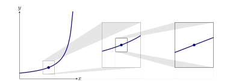
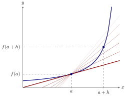

We compute the instantaneous growth rate by computing the limit of average growth
rates.
Given a function, it is often useful to know the rate at which the function changes.
To give you a feeling why this is true, consider the following:
- If represents the displacement (position relative to an origin) of an
object with respect to time, the rate of change gives the velocity of the
object.
- If represents the velocity of an object with respect to time, the rate of
change gives the acceleration of the object.
- If represents the revenue generated by selling objects, the rate of
change gives us the marginal revenue, meaning the additional revenue
generated by selling one additional unit. Note, there is an implicit
assumption that is quite large compared to .
- If represents the cost to produce objects, the rate of change gives us
the marginal cost, meaning the additional cost generated by selling one
additional unit. Again, there is an implicit assumption that is quite large
compared to .
- If represents the profit gained by selling objects, the rate of change gives
us the marginal profit, meaning the additional cost generated by selling
one additional unit. Again, there is an implicit assumption that is quite
large compared to .
- The rate of change of a function can help us approximate a complicated
function with a simple function.
- The rate of change of a function can be used to help us solve equations
that we would not be able to solve via other methods.
From slopes of secant lines to slopes of tangent lines
You’ve been computing average rates of change for a while now, the computation is
simply However, the question remains: Given a function that represents an amount,
how exactly does one find the function that will give the instantaneous rate of
change? Recall that the instantaneous rate of change of a line is the slope of the line.
Hence the instantaneous rate of change of a function is the slope of the
tangent line. For now, consider the following informal definition of a tangent
line:
Given a function and a number in the domain of , if one can “zoom
in” on the graph at sufficiently so that it appears to be a straight
line, then that line is the tangent line to at the point .
We illustrate this informal definition with the following diagram:

The derivative of a function at , is the instantaneous rate of change, and hence is the
slope of the tangent line at .
What is the instantaneous rate of change of ?
The rate of change is the slope of the
tangent line.
The line tangent to , is simply itself!
The derivative is
4.
Unfortunately, if is not a straight line we cannot use the slope formula to calculate
this rate of change, since is the only point on this line that we know. In order to deal
with this problem, we consider secant lines, lines that locally intersect the
curve at two points. One of these points will be , the point at which we
are trying to find the rate of change. If we call the difference between the
-coordinates of the two points, then the second point for our secant line is . The
slope of any secant line that passes through the points and is given by
If , find the slope of the secant line through and , in terms of .
Start with the slope
formula we just found, Now substitute in for the function we know, Now expand
the numerator of the fraction, Now combine like-terms, Factor an from
every term in the numerator, Cancel from the numerator and denominator,
The following diagram shows the secant lines for several values of , as well as the
tangent line at .

Notice that as approaches , the slopes of the secant lines are approaching the slope
of the tangent line. This leads to the definition of the derivative:
The
derivative of at is If this limit exists, then we say that is
differentiable at .
If this limit does not exist for a given value of , then is
non-differentiable at
.
Which of the following computes the derivative, ?
There are several different notations for the derivative. The two we’ll mainly be
using are
Now we will give a number of examples.
If , find the derivative of at .
Start with the
definition of the derivative, Now substitute in for the function we know, Now
expand the numerator of the fraction, Now combine like-terms, Factor an from
every term in the numerator, Cancel from the numerator and denominator, Take
the limit as goes to ,
Find an equation for the line tangent to at the point .
To find an equation for a line,
we need two pieces of information. We need to know a point on the line, and we need
to know the slope. In this question, we are given that is on the line. That means we
need to find the slope of the tangent line. Finding the slope of the tangent line at the
point means finding .
Start by writing out the definition of the derivative, Multiply by to clear the
fraction in the numerator, Combine like-terms in the numerator, Cancel from the
numerator and denominator, Take the limit as goes to , We are looking for an
equation of the line through the point with slope . The point-slope formula tells us
that the line has equation given by
An object moving along a straight line has displacement given by . Find the velocity
of the object at time .
Velocity is the rate of change of displacement with respect to
time. We are being asked to find . The definition of the derivative gives Multiply by ,
Now expand the numerator, Combine like-terms, Cancel from the numerator and
denominator, Take the limit as tends to , The object has velocity at time
.